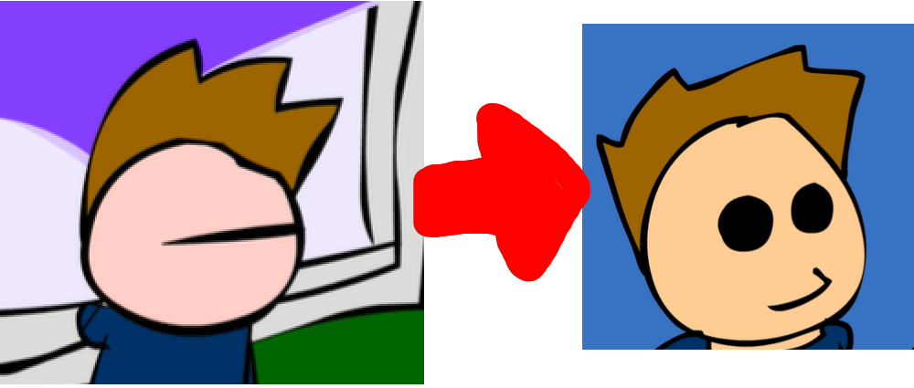

Eddsworld Is A Series Of Comics And Videos Created By Edd Gould On The 6Th Of June 2003,
And Is Still Going To This Day.
The First Eddsworld Episode Was Called Edd, And Was Released On A Site Named Newgrounds In 2003.
Not Many People Count This As The First Episode,
Seeing As Most People Watch Eddsworld Through Youtube.
If You Watch Eddsworld On Youtube, Some Of The Older Episodes Will Be In A Low Quality. On Newgrounds, They Use The Original Resolution Of The Videos, So If You Want Higher Quality Eddsworld Episodes, Watch Them On Newgrounds.
Eddsworld Continued To Go On For A While, With Many Episodes And Comics, And Had A Change To The Character Designs In 2006, Involving Tom's Eyes Being Changed From One Line, To Two Black Dots.
In 2008, Tord Larsson Decided To Leave The Team, Due To Unexplained Reasons. In The Eddisode 25ft Under The Seat, There Was A Short Opening Scene Depicting Tord Driving Away From The House.
In One Of The Next Episodes After That, Specifically Zanta Claws II, There Is One Of The First References To Tord, After He Leaves.